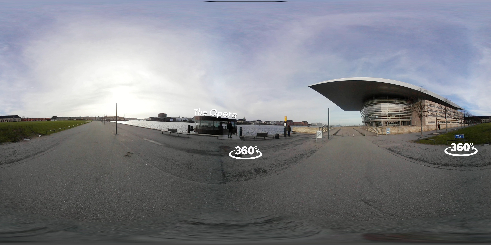

<!DOCTYPE html>
<html lang="da">

<head>
    <meta charset="utf-8">
    <meta name="viewport" content="width=device-width, initial-scale=1.0">
    <script src="https://aframe.io/releases/0.9.0/aframe.min.js"></script>
    <script src="https://unpkg.com/aframe-animation-component@^4.1.2/dist/aframe-animation-component.min.js"></script>
    <title>Video</title>
    <script scr="script.js"></script>
</head>

<body>
    <a-scene background="color: #ECECEC">
        <a-assets>
            <!-- 360 equirectangular images for links -->
            <!--
            
            
            -->
            

            <!-- 360 equirectangular video-->
            <video id="opera360" autoplay loop="true" src="img/Opera_1080.mp4"></video>

            <!-- MIXINS to make positioning easier 
            <a-mixin id="leftlink" position="2 1 -5"></a-mixin>
            <a-mixin id="middlelink" position="6 1 -5"></a-mixin>-->
            <a-mixin id="rightlink" position="0 0 0" rotation="90 190" scale="1% 1% 1% 1%"></a-mixin>
        </a-assets>

        <a-videosphere src="#opera360">
        </a-videosphere>

        <!--<a-sky src="#background"></a-sky>

        <!-- Interlinks 
        <a-link class="link" href="http://www.askedahl.dk/opera/index.html" title="Aske" mixin="leftlink" image=""></a-link>
        <a-link class="link" href="http://philipstampe.dk/KEA/Semester_3/A-Frame/index.html" title="Philip" mixin="middlelink" image=""></a-link>-->
        <a-link class="link" href="index.html" title="Back" mixin="rightlink" image="#back"></a-link>

        <!-- POV -->
        <a-camera look-controls>
            <a-cursor fuse="false" fuse-timeout="1500" raycaster="objects: .link">

            </a-cursor>
        </a-camera>

    </a-scene>

</body>

</html>
